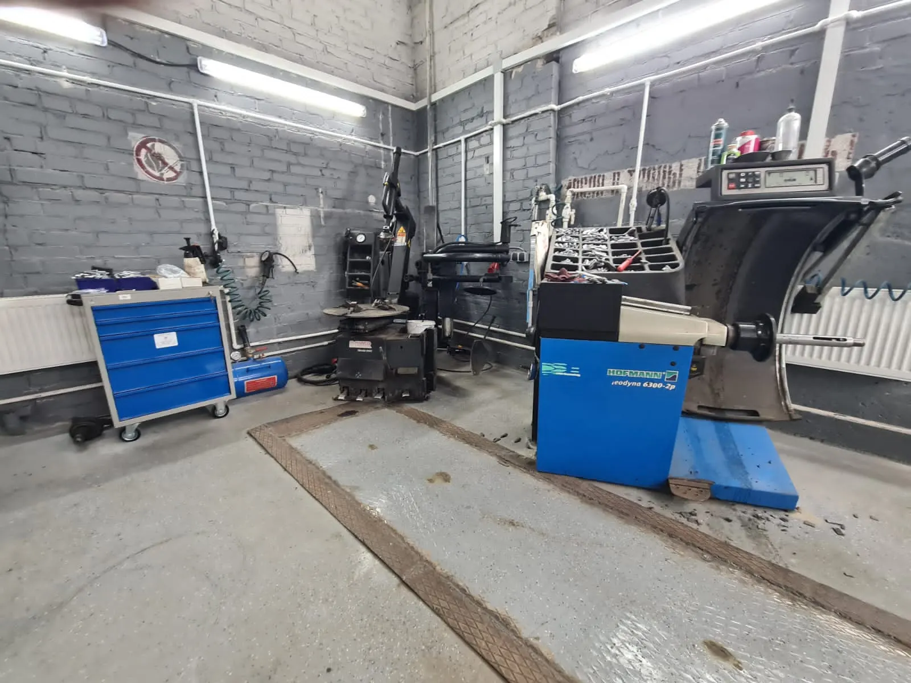
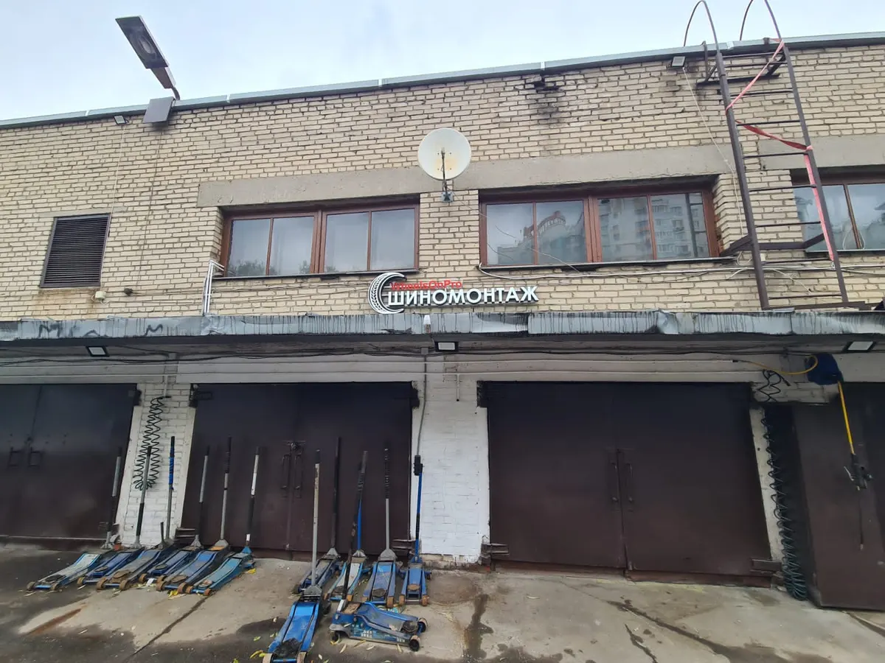
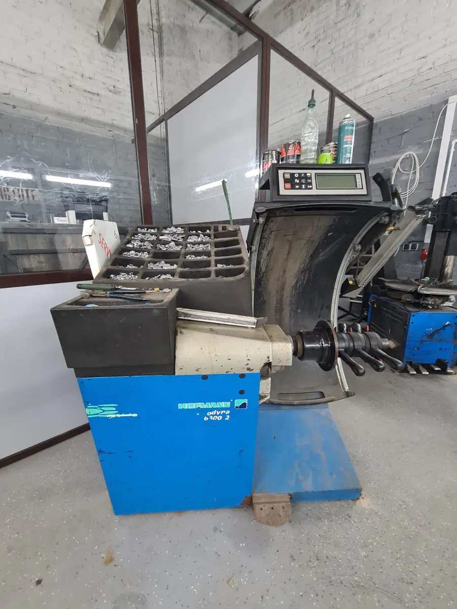
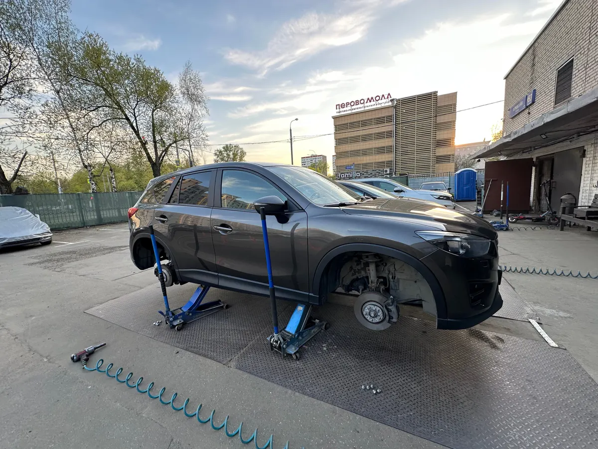

Шиномонтаж · Перовская, 63
WheelsOnPro на Перовской – три поста, переобувка за 20 минут
Перовская улица, 63. Смена резины и колёс, балансировка, ремонт шин, реставрация и покраска дисков, шиповка, хранение. Ежедневно с 10:00 до 22:00.
- Ежедневно 10:00–22:00
- 184 оценки, рейтинг 5,0
- Три поста, хранение в тёплом помещении

Цены
Цены с карточки на Яндекс Картах. Точная сумма зависит от радиуса и доп. услуг.
Шиномонтаж, 4 колеса
- Смена резиныдо 6300 ₽ по радиусуот 1 900 ₽
- Смена колёс с балансировкойдо 3700 ₽ по радиусуот 1 300 ₽
- Подкачка шин100 ₽
Ремонт и хранение
- Ремонт шины заплаткойR13–R14, до 600 ₽ на R19–R24от 300 ₽
- Сезонное хранение шинотапливаемое помещение6 000 ₽ 4 шт.
Без учёта доп. услуг: колёса с датчиками, медная смазка ступиц, пакеты. В описании хранения на карточке указано «4000 ₽ за 6 месяцев», а в цене – 6000 ₽: уточним при записи.
Как проходит
- 01
Записываетесь на время
По телефону или в Telegram – подъезжаете к назначенному времени.
- 02
Ставим машину на свободный пост
Площадок три, переобуваем по три машины сразу.
- 03
Снимаем, моем, меняем, балансируем
Колёса снимаем, моем, меняем резину и балансируем одним комплексом.
- 04
Оплачиваете как удобно
Картой, наличными, по QR-коду или СБП.



За чем к нам едут
Очередь движется быстро
«переобувают по три машины сразу» – из отзыва на Картах.
Берёмся за работу
Клиенты пишут: другие сервисы не брались или не отвечали, а здесь сделали и дали гарантию.
Диски под ключ
Правка, прокатка, алмазная проточка, сварка аргоном, покраска.
Отзывы с Яндекс.Карт
«Это лучший шиномонтаж где я только был, колеса моют всё делают счательно, мастер просто профи, всё рассказывает что и как, теперь только в этот шиномонтаж, очень удивили своим обслуживанием и ценой»
Владимир Федосов · 4 октября 2026
«Отличный шиномонтаж, созвонилился приехал в течение 10 мин решили проблему за что очень благаюоларен, работает приятный отзывчивый мужчина»
Виталий · 26 августа 2026
«Всё очень понравилось,заехала выровнять давление в шинах ,всё Чётко сделали,до этого была в 4 х автосервисах ,все Косячили , я очень довольна их работой и ,цены адекватные,спасибо !!! Буду рекомендовать другим 👍»
наталья копылова · 6 мая 2026
Отзывы с карточки на Яндекс.Картах, без правок.
Частые вопросы
Как вас найти?
Перовская улица, 63. Кирпичное здание с вывеской WheelsOnPro «Шиномонтаж» над воротами.
Нужна ли запись?
Работаем и по живой очереди, но с записью вас примут к назначенному времени.
Где хранятся шины?
В отапливаемом помещении, без прямого солнца и влаги.
Даёте гарантию?
Да, гарантия указана в услугах карточки.
Запишитесь к своему времени
- Адрес
- Перовская улица, 63, Москва
- Часы
- Ежедневно 10:00–22:00
- Телефон
- +7 (926) 366-19-39